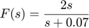

Specifications
Contents
A control design is dectated by design specification. In QFT, the so called Horowitz-Sidi bounds, used for loop-shaping, are computed such that the closed-loop staisfies the design specifications (if the designer knows what he is doing). In QFT all specifications must be finally formulated in the frequency domain, and those that are originally given in the time domain must be translated to the frequency domain. The specification generation and conversion from time to frequency domain is facilitated by the qspc class.
Frequency Domain Specifications
The usual syntex is
spec = qspc(name,frequency,upper);
where name string gives the specifcation alias, frequency the vector of frequencies over which the specifcation is to be computed, and upper is the upper bound in [dB].
There are three options to determine the upper bound of the specifications:
- Upper bound given by real numeric scalar/vector in dB. If the upper bound is a vector it must be the same length as w.
- Upper bound given by LTI (TF , ZPK, FRD). This option is used when the upper bound is given as an LTI object. In case of an FRD object, the frequency inside it must include the frequencies in the vector supplied to qspc.
Exmaple 1: A 6db sensitiveity specificaiton in the range [0.1 100] rad/s is given as
spec = qspc('odsrs',logspace(-1,2,20),6);
Note the naming odsrs which stands for "output disturbance step response specification".
Exmaple 2: Sometimes the specifications are given by a transfer function. Lets say that the noise is known to lay under the transfer function

The specfication may be defined as follows
w = logspace(-2,3,100); TF = 2*tf([1 0],[1 0.07]); %tf UpperBound = 20*log10(abs(squeeze(freqresp(TF,w)))); sens_spc = qspc('odsrs',w,UpperBound); sens_spc.show

Alternatively, one may input the transfer function directly as a Control System Toolbox TF, ZPK, or FRD object. This simplifies the previous exmaple (by one line) to
TF = 2*tf([1 0],[1 0.07]); %tf sens_spc = qspc('odsrs',w,TF);